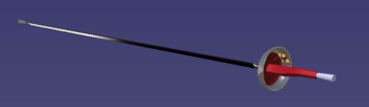
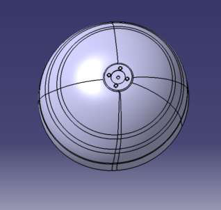
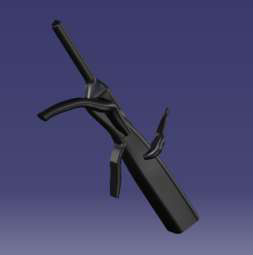
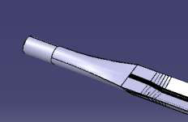

Modélisation surfacique
Créer des formes lisses et complexes en Generative Shape Design : profils guides, surfaces multi-sections, passage au volume.
PL. 05 · PROJET CAO · 4E ANNÉE · 2026
Concevoir un seul modèle CAO capable de générer toutes les versions d'une épée : taille réglementaire, droitier ou gaucher, type de poignée, version électrique ou non.

01 · LE SUJET
En escrime, les dimensions des armes sont strictement encadrées par la Fédération Internationale d'Escrime, mais chaque tireur a ses préférences : main, forme de poignée, type de lame, pratique électrique ou « à sec ».
Plutôt que de dessiner chaque version séparément, l'objectif était de créer un modèle unique et intelligent : on choisit ses options, et toute l'épée se met à jour automatiquement, en restant conforme au règlement.
Un vrai cas d'usage industriel : permettre à un fabricant de proposer une arme personnalisée, fabriquée sur mesure.
02 · LA DÉMARCHE
Décomposer l'épée en pièces (lame, garde, poignées, pommeau, contact électrique…) et définir les paramètres de chacune.
Part Design pour les pièces mécaniques, Generative Shape Design pour les formes complexes : surfaces multi-sections, épaississement.
Formules, règles et checks Knowledgeware dans chaque pièce, pour qu'elle s'adapte seule aux paramètres choisis.
Tout est commandé depuis l'assemblage via des paramètres externes et une table de configurations liée à Excel.
03 · EN IMAGES



04 · COMPÉTENCES ACQUISES
Créer des formes lisses et complexes en Generative Shape Design : profils guides, surfaces multi-sections, passage au volume.
Piloter une géométrie par des paramètres et des ratios plutôt que par des cotes figées, pour garder des proportions réalistes.
Écrire des formules, des règles d'activation et des checks pour automatiser le modèle et sécuriser les valeurs saisies.
Transmettre des paramètres de l'assemblage aux pièces et gérer les contacts entre pièces qui évoluent avec la géométrie.
Standardiser nos méthodes de conception pour que des pièces modélisées séparément fonctionnent ensemble.
Mener un projet ambitieux en parallèle d'un semestre chargé, en priorisant l'essentiel.
05 · LOGICIELS UTILISÉS
06 · EN CONCLUSION
Ce projet a été l'occasion de réunir tout ce que j'ai appris sur CATIA pendant ma formation, et d'aller plus loin avec le paramétrage : passer d'une pièce dessinée à un modèle capable de s'adapter tout seul.
J'y ai surtout renforcé ma maîtrise de la modélisation surfacique, et appris à concevoir en équipe un produit complet et cohérent.